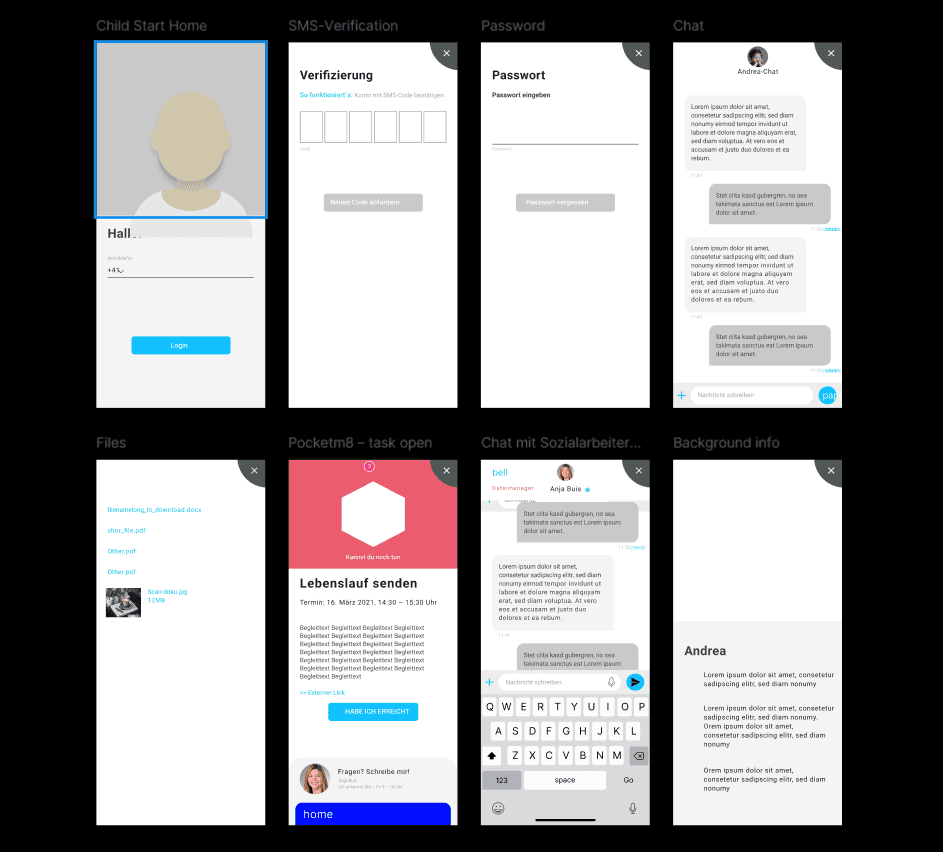
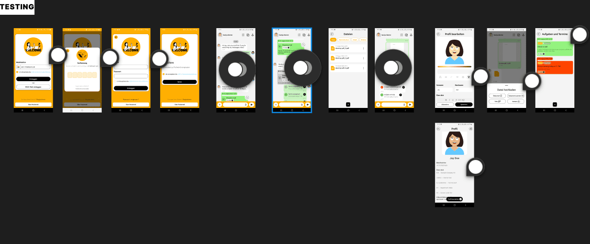
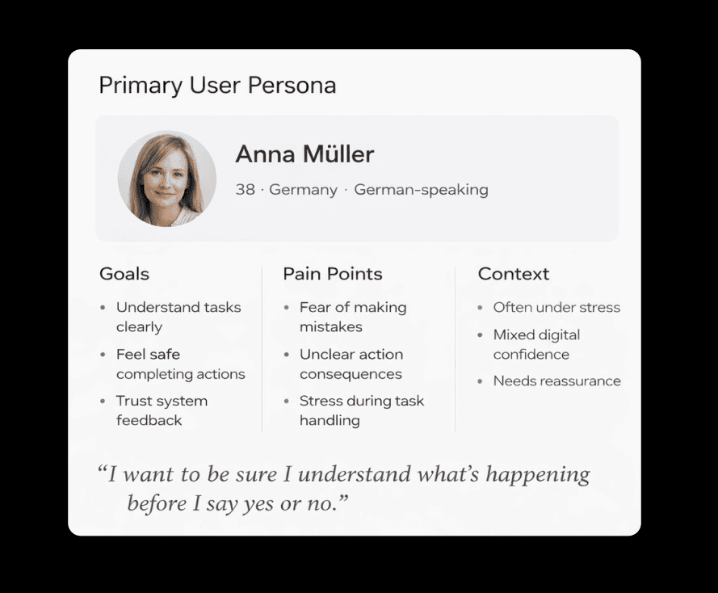
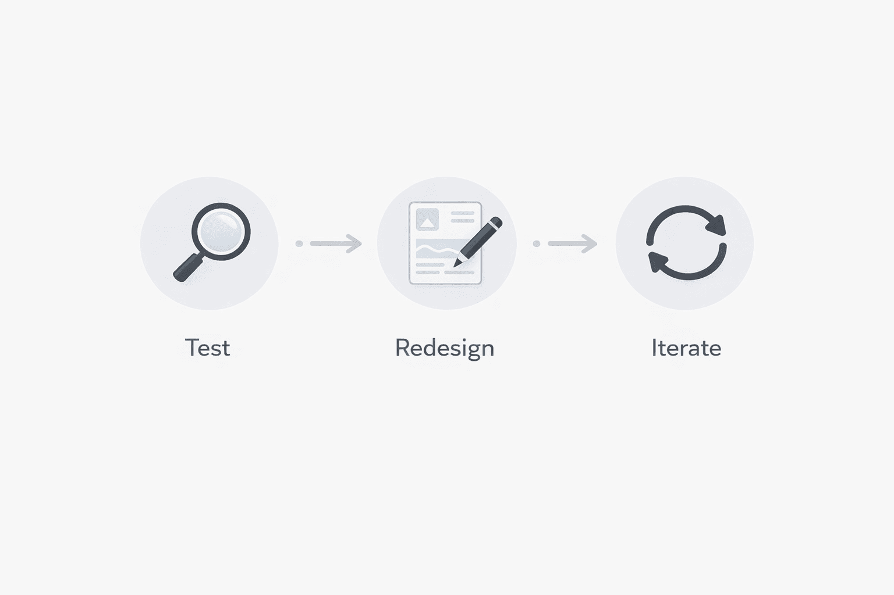
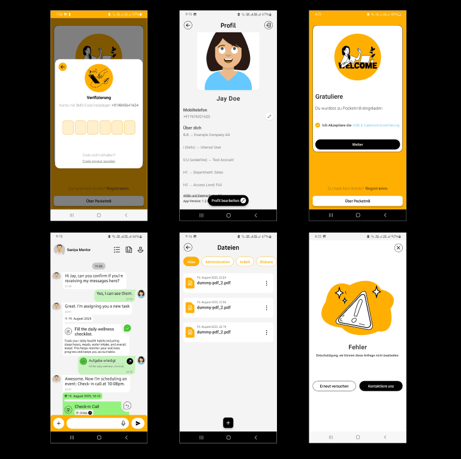
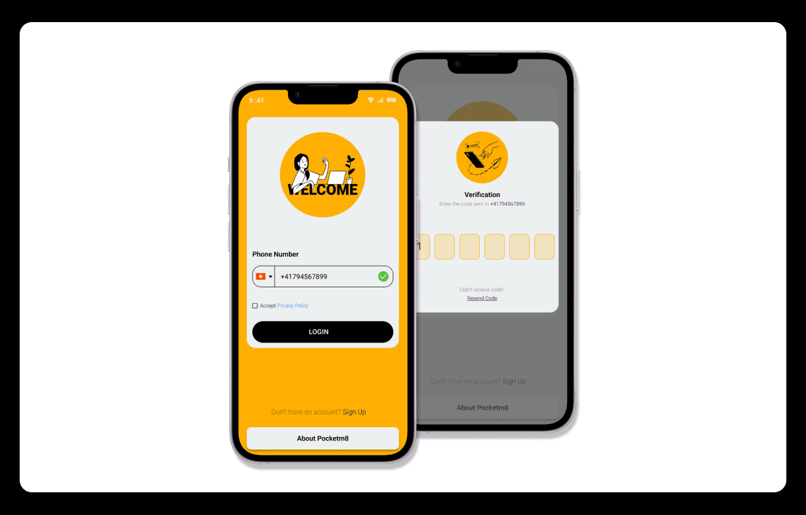
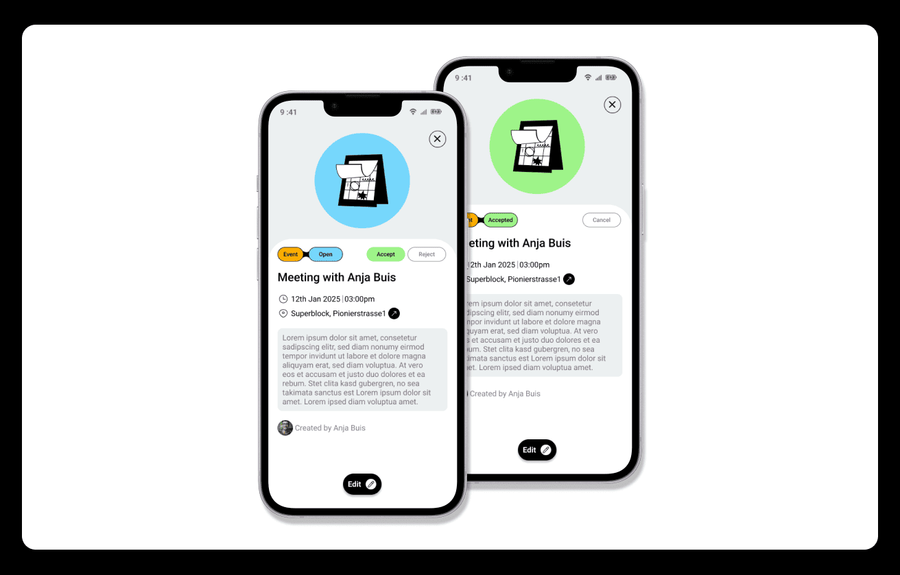
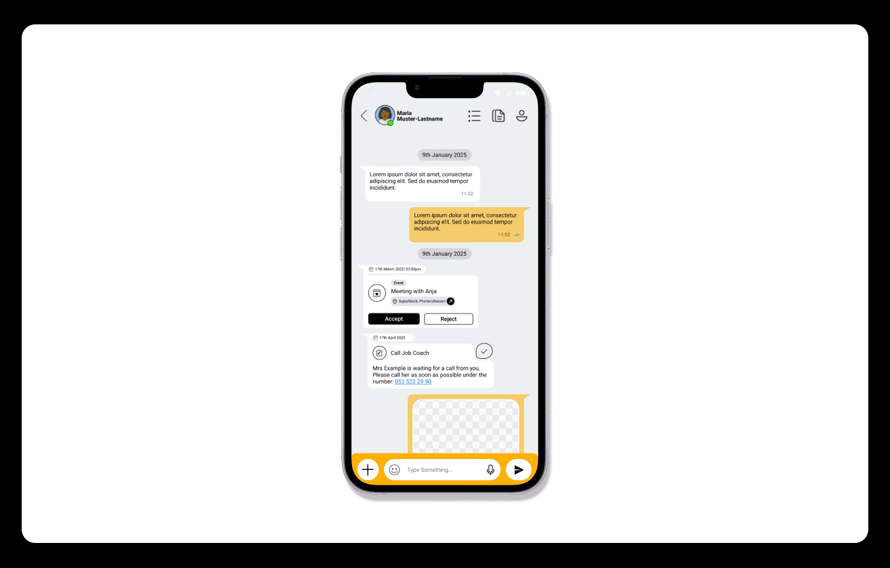
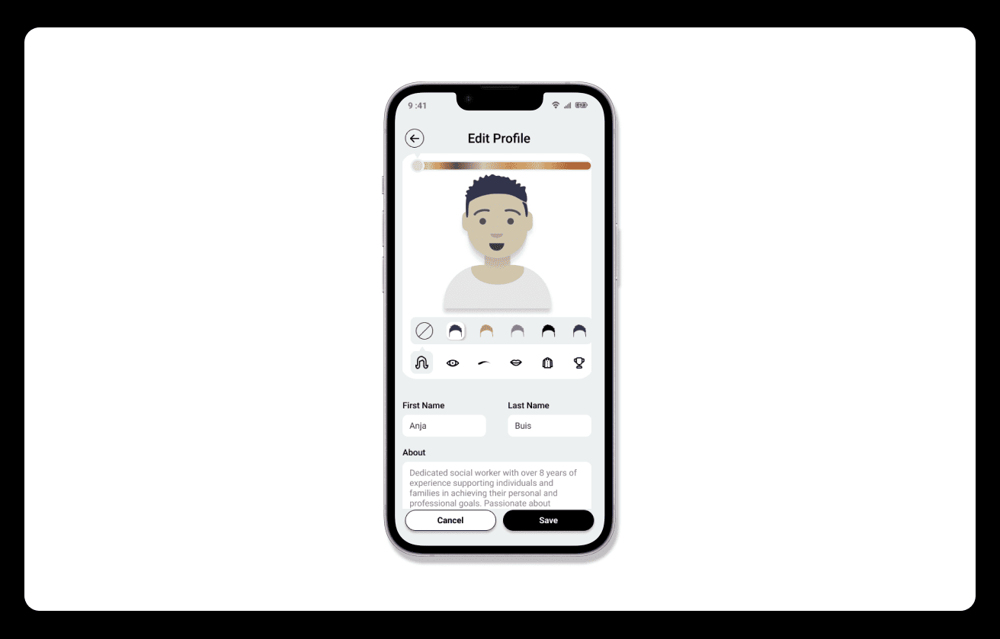

Pocket M8
End-to-End UX Case Study · Sozial Digital

Role: UX/UI Designer
Platform: Mobile App
Type: Live Product Redesign
Project Overview
Pocket M8 is a digital social-support platform designed to help users manage
tasks, events, and communication in sensitive and trust-driven contexts.
The product was already live but suffered from unclear flows, weak feedback
states, and high cognitive load.
Problem Statement

- Unclear onboarding and entry points
- Confusing task vs event creation
- Silent messaging failures
- Overloaded dashboards
- Lack of emotional feedback
Research & Discovery
Research relied on live product testing, stakeholder feedback, and heuristic
audits rather than formal interviews.

Users & Context

- Clients working with social workers
- German-speaking users
- Mixed digital literacy levels
- Often interacting under stress
Design Process

The redesign followed an iterative loop of testing, redesigning, and
validating changes against real constraints.

Key Screens Designed
Authentication & Role Clarity

Task & Event Management

Messaging

File Sharing

User Profile

Outcomes & Impact
- Improved clarity across core workflows
- Reduced user hesitation
- Stronger trust through explicit feedback
- Positive stakeholder validation
Learnings
- Silent failures damage trust
- Consistency builds confidence
- UX in sensitive domains needs empathy
Future Improvements
- Formal usability testing
- Accessibility audits
- UX metrics
- Design system documentation
Final Note
This project strengthened my ability to design responsibly for real users,
work within constraints, and prioritise emotional clarity alongside
usability.